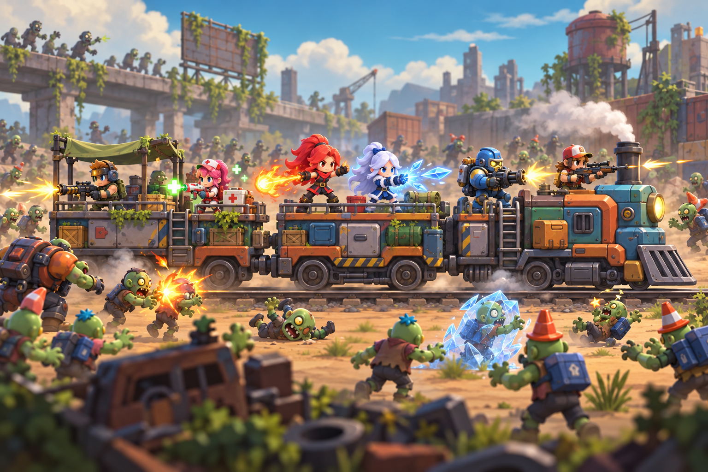
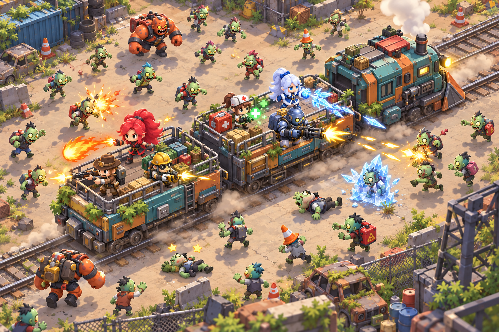
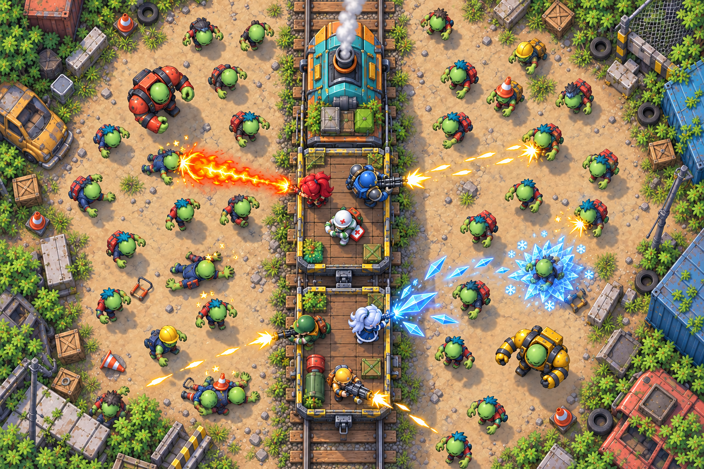
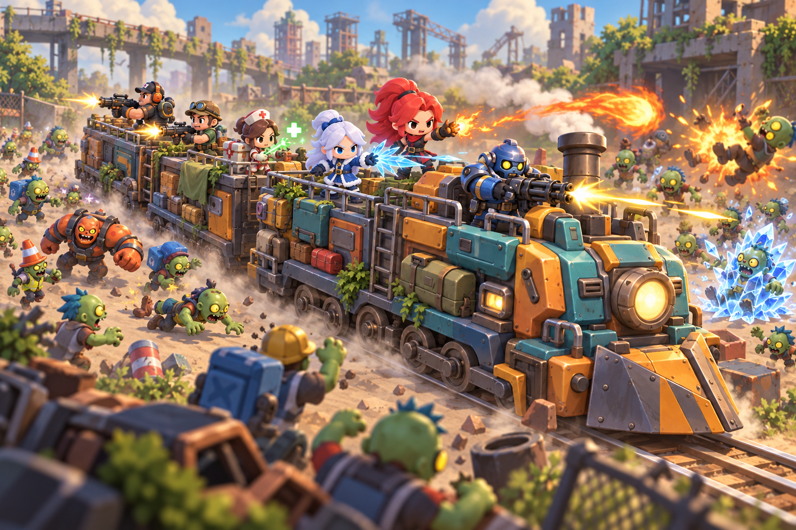
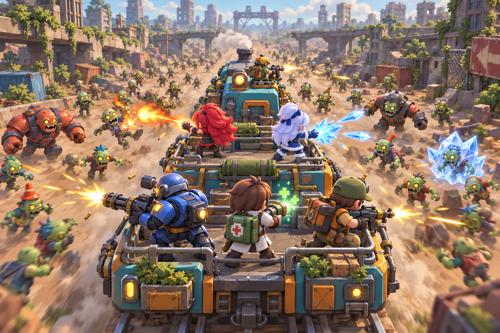
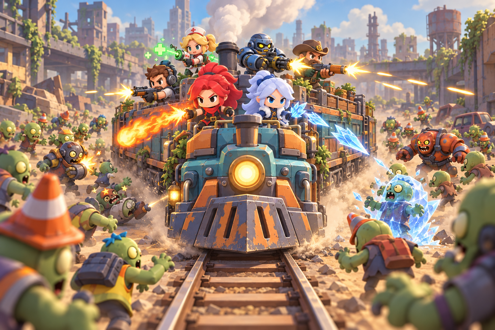

建议先验证：45°俯视主战斗 + 车尾追随行进镜头
45°视角兼顾英雄表现与四面来敌；车尾镜头用于路途过渡与道路事件。正侧方可承担列车编队、车厢升级的展示。










从三路推进转向移动列车：英雄驻守车上，向四周僵尸开枪或释放冰火超能力。沿用项目圆润、明亮、玩具质感的欧卡风格，比较六种镜头的战斗可读性与旅途氛围。
本页为静态概念研究。列车与角色细节在独立生成的方案中略有差异，镜头角度用于美术方向表达，尚未接入可玩战斗。
45°视角兼顾英雄表现与四面来敌；车尾镜头用于路途过渡与道路事件。正侧方可承担列车编队、车厢升级的展示。





